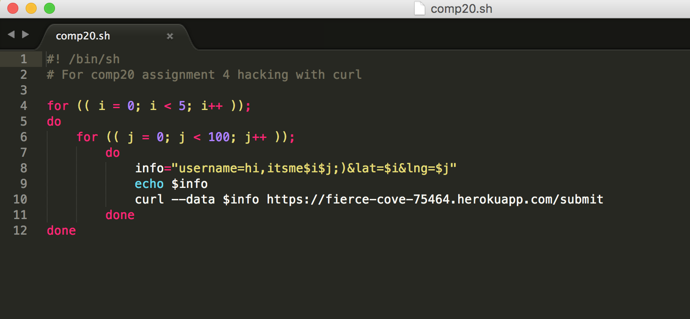

Security Assessment of Not Uber
By: Haomin Feng, April 2017
Introduction
The purpose of this report is to find security issues in Suneeth Keerthy's web application of "the Black Car Service", which can be found here. The web application takes in and stores user's inputs of username, latitude and longitude ("checkins"), and display them back according to the different requests. Here are the four features that the web application can do:
- A POST /submit API that returns a JSON string after user submits check-in from any domain.
- A GET /vehicle.json API that returns the record for a given username as a JSON object if record exist in MongoDB collection vehicles.
- GET / - Home, the root, the index that returns HTML presentation of the passengers database.
Methodology
Before I recieved the copy of Sunneth Keerthy's source code of his "server.js" file, I performed the "black box" tesing by using the Postman app and the curl command line http client. After receiving the source code, I examined it carefully and found further several security issues.
Abstract of Findings
The biggest security problem in Suneeth's web application is not validating user's inputs. It accepts whatever the user inputs, stores them, and redisplays them to other users. Thus it could result in users submitting false information, together with Cross Site Scripting, which can crash the web application.
Issues Found
Issue 1: Cross Site Scripting (XSS)
- Location: POST /submit method and GET / method
- Severity of issue: HIGH. This is very dangerous since hackers are able to inject malicious code into the web applicaiton, thus affecting the future user who enters the index page. For example, I was able to make alerts pop up and create links to other websites. Essentially, hackers can manipulate the webpage in ways they want with cross site scripting which can crash the website.
- Description of issue: I found this issue when injecting several scripts into the server by using POST/submit. The web application does not check for invalid user inputs for checkin so I was able to type a script in the username parameter like
alert("Yo it's hacked"); that will later be embedded in the rendered index page of GET /.
- Proof of vulnerability:
The commands used:
The results:
- Resolution: A simple way to avoid cross site scripting is to sanitize the data from user input. For example, we can use the validator module in Nodejs to replace special characters with their HTML equivalents before storing the data into the server.
For example:
username = username.replace(/[^\w\s]/gi, ''); // remove all special characters.
Issue 2: Database Query Injection Attack
- Location: GET /vehicle.json method
- Severity of issue: MEDIUM. This is rather dangerous since hackers are able to access the database of the web applicaiton, thus causing leaks of user information. For example, I was able to use MongoDB database queries instead of regular strings to request for more information in the database by using "usename[$ne]=hfeng03", which the website returned json data of which the usernname was not "hfeng03". Essentially, hackers can manipulate the database in ways they want to get access to and possibly expose the users' information.
- Description of issue: I found this issue when sending the query "username[$ne]=hfeng03" through GET /vehicle.json. The endpoint of GET /vehicle.json API does not check for validation. Therefore I was able to get checkin information of drivers whose usernames are not 'hfeng03'.
- Proof of vulnerability:
- Resolution: Again, this issue can be resolved by sanitizing the query. Query strings should be converted into type string before we seach it through the database.
For example:
query = parseString(request.query);
Issue 3: No Authentication
- Location: POST /submit
- Severity of issue: MEDIUM. This is dangerous since hackers are able to post hundreds of garbage checkins with differnt usernames, or even with the invalid data like putting string values in the "lat" and "lng" parameters. Also, flooding the database with large amount of data may crash the web server since there may not be enough space to store them.
- Description of issue: I found this issue by writing a for loop of curls in the shell script (see below). I curled 500 times to flood Suneeth's database with garbage information. Think about it, I can even run an infinite loop to insert more data into the database, which will eventually cause the web application to crash.
- Proof of vulnerability:
The commands used:

The results:
- Resolution: A simple way to avoid data flooding is rejecting numerous data insertions from the same IP address. Or we can implement a login verification system which only allows the verified users to POST to the server.
Conclusion
Most of the security issues arise from putting too much trust on the user's inputs. It is important to check and validate user's inputs before storing them into the database and sending them back to the client side for display. Following these considerations will largely reduce the potential security problems, also at a low cost.
References
https://tuftsdev.github.io/WebProgramming/notes/web_security.html
http://itsecgames.com/
http://www.veracode.com/security/xss
https://gist.github.com/mchow01/49f8979829f1c488d922